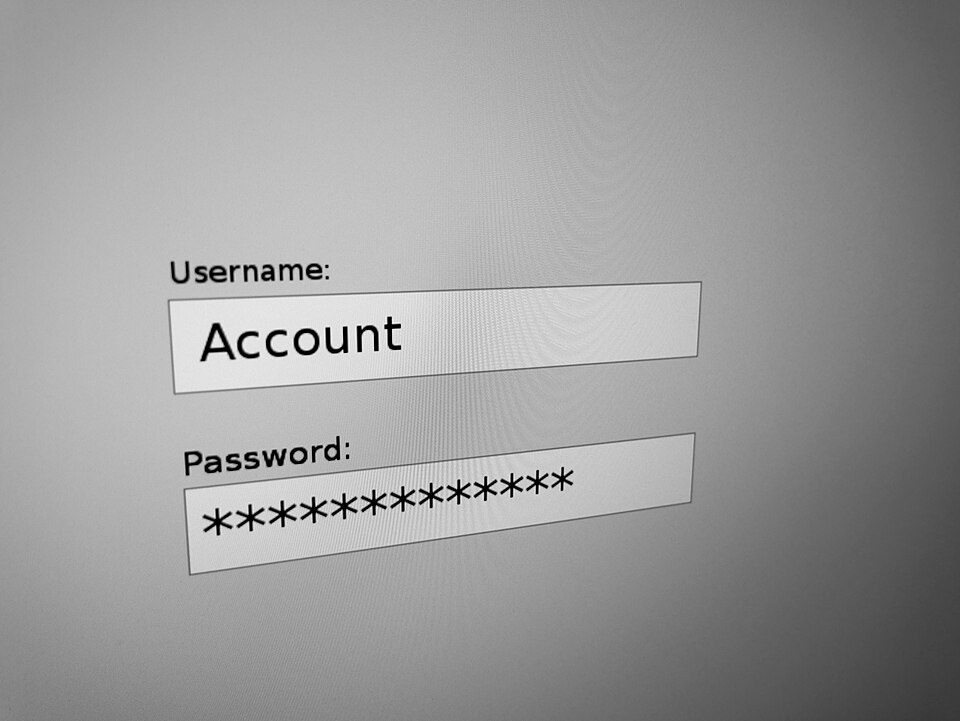
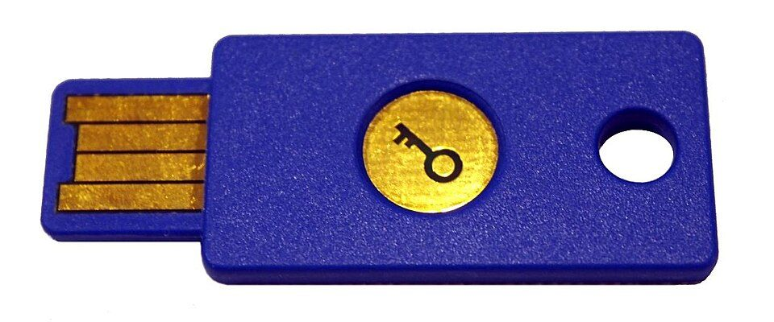

パスワード管理の基本：使い回しを防ぐ方法（管理ツール・2段階認証・パスキー）
要点まとめ
メール、ネットバンキング、買い物、SNSと、ログインが必要なサービスは増える一方です。覚えきれずに同じパスワードを使い回すと、1か所から漏れただけで、ほかのサービスにも入られてしまいます。この記事では、使い回しを防ぐ方法を、警察庁・総務省・情報処理推進機構（IPA）・国家サイバー統括室などの公的機関の説明でまとめました。

使い回しが危ない理由
流出したリストで、別のサービスに自動でログインを試す
「パスワードリスト攻撃」と呼ばれる手口
JPCERT/CCは、事前に手に入れたIDとパスワードのリストを使い、プログラムで自動的に入力してログインを試す手口を「パスワードリスト攻撃」と呼んでいます[1]。総務省も、あるサービスから流出したアカウント情報を使って、別のサービスへの不正ログインを試す手口が知られていると説明しています[4]。国家サイバー統括室のリーフレットは、同じパスワードを使っていると、一か所から漏れればすべてのサイトでログインできてしまうとしています[2]。
令和7年の不正アクセスは7,190件
前年より1,832件、約34.2%増えた
国家公安委員会・総務大臣・経済産業大臣が2026年3月に公表した、令和7年（2025年）の不正アクセスの認知件数は7,190件で、前年より約34.2%増えました[3][7]。不正アクセスのあとに行われたことでは、ネットバンキングでの不正送金などが4,747件で最も多くなっています[3]。
見方: 検挙された事件のうち、他人のIDとパスワードを使った399件の手口です。「パスワードの設定・管理の甘さにつけ込んで入手」が84件で最も多く、前年の174件からは減りました。「フィッシングサイトから入手」は前年の41件から77件に増えています[3]。
不正ログインは、11年続けて「10大脅威」に
使い回しをしない人は、スマホ利用者の半分以下
IPAの「情報セキュリティ10大脅威 2026」の個人編では、「インターネット上のサービスへの不正ログイン」が11年連続で選ばれました[8]。IPAの2022年12月の調査では、「使い回しをしない」を実行している人の割合は、パソコン利用者で58.1%、スマホ利用者で46.6%で、ほかのパスワードの対策より低くなっていました[9]。
強いパスワードの条件
| 機関 | 長さ・文字 | 定期的な変更 |
|---|---|---|
| 総務省 | 最低でも10文字以上の、ある程度長いランダムな英数字の並び[4] | 不要。流出したときは変える[4] |
| 警察庁 | 10文字以上。大小の英字・数字・記号を全て使う[11] | （記述は確認できず） |
| 国家サイバー統括室 | 英大文字・小文字・数字を組み合わせてできるだけ長く。記号を足すとより安全[2] | 基本は不要。流出したら速やかに変える[5] |
| IPA | できるだけ長く、複雑で、使い回さない[12] | （記述は確認できず） |
どの機関も、使い回さないことを求めています[4][11][2][12]。
定期的な変更は不要。漏れたら、すぐ変える
変えすぎると、作り方が単純になりやすい
総務省は、サービス側から流出した事実がなければ、パスワードを変える必要はないとしています[4]。定期的に変えると、作り方がパターン化して簡単なものになったり、使い回すようになったりするほうが問題だと説明しています[4]。国家サイバー統括室のハンドブックも、定期変更は基本は必要なく、流出したときは速やかに変えるとしています[5]。
覚えるなら、関係のない単語をつなげる
ブラウザやスマホの生成機能も使える
総務省は、自分で覚えるパスワードの工夫として、無関係な（文章にならない）複数の英単語をつなげたり、その間に数字の列を挟んだりする方法を紹介しています[4]。スマホやブラウザには、パスワードを作る機能が標準で付いているとも説明しています[4]。
全部は覚えない：管理の方法
見方: IPAの調査では、自分で記憶する人と紙にメモする人がそれぞれ4割を超えていました。70代以上では、紙にメモする人が62.2%でした[9]。「メモ帳・表計算」は、ファイルにパスワードのロックをかけていない人の割合です。
| 方法 | 公的機関の説明 |
|---|---|
| 管理ツール（ブラウザ・スマホの標準機能、専用アプリ） | 総務省は、覚える必要のない管理ツールを使うことも勧めている[4]。IPAは、パスワードマネージャーの利用を検討するよう呼びかけている[6] |
| 紙のノート | 総務省は、やむを得ずメモしたときは、鍵のかかる机や金庫で保管するとしている[4]。国家サイバー統括室のハンドブックは、紙のノート2冊に書く方法を例に挙げている[5] |
| 自分で記憶 | 覚えるなら、無関係な英単語をつなげるなどの工夫を[4]。IPAは、共通の部分とサービスごとの部分を組み合わせる方法も紹介[15] |
管理ツールは、端末のロックとマスターパスワードで守る
ツールの入り口が破られると、全部が危ない
総務省は、管理ツールは、覚えられる十分に安全なマスターパスワードや、スマホなどの端末のロック（生体認証など）で守る必要があるとしています[4]。2022年に情報漏えいが起きた管理サービスLastPassは、利用者の保管データのバックアップがコピーされたと公表し、マスターパスワードを使い回さないよう勧めています[16]。
ブラウザへの保存は、機関によって説明が違う
総務省は、スマホやブラウザの標準機能を使う方法も紹介しています[4]。一方、国家サイバー統括室のハンドブックは「ウェブブラウザにはパスワードを保存しない」と図で示しています。管理アプリのクラウド連携も、大事な情報が複数の場所にあれば流出の可能性が増えるとして、無条件では勧めていません[5]。
パスワードだけに頼らない
2段階認証は、SMSよりアプリや機器で
知っているもの・持っているもの・体の一部の2つ以上
総務省は、多要素認証を、知識・所持・生体の3つの要素のうち2つ以上を組み合わせて本人を確かめる方法と説明しています[4]。国家サイバー統括室のハンドブックは、SMSやメールで届くワンタイムパスワードは推奨できないものとし、スマホのアプリで作るワンタイムパスワード、USBのセキュリティキー、生体認証を勧めています[5]。Googleも、SMSや音声通話でコードを受け取る方法は、電話番号を使ったハッキングに弱いおそれがあるとしています[20]。

パスキーは、盗まれにくいログインの方法
IPAは「使えるなら極力使う」よう呼びかけ
パスキーは、指紋認証や顔認証、スマホの画面ロックなどでログインする仕組みです[21]。Appleは、パスキーでは、サービス側のサーバーが秘密の鍵を知ることはないと説明しています[22]。Googleは、パスキーは書き留めたり共有したりできないとしています[21]。IPAは、パスキーが使える場合は極力使うよう呼びかけています[6]。
漏れていないか確かめる・漏れたら
スマホやブラウザの機能で、漏えいを確かめる
漏れた・弱い・使い回したパスワードがわかる
Googleの「パスワード チェックアップ」では、保存したパスワードが漏えいしていないか、弱くないか、使い回していないかを確かめられます[29]。Chromeは、パスワードを暗号化して照合し、ユーザー名やパスワードがGoogleに記録されることはないとしています[30]。iPhoneでも、既知の漏えいデータにパスワードが含まれていると警告が出ます[31]。
「パスワードが漏れました」というメールに注意
国家サイバー統括室のハンドブックは、流出事故に便乗したフィッシング詐欺がよくある攻撃のパターンだと注意しています[5]。消費者庁は、SMSやメールに書かれたURLにはアクセスせず、事前にブックマークした正規のサイトなどから確かめるよう呼びかけています[33]。
不正ログインされたかもしれないときは、次の順で対応します[10]。
- まず
ログインできるなら、すぐにパスワードを変える
- 確認
登録されたメールアドレスや電話番号を見て、自分のものでなければ消す
- 設定
多要素認証を設定する
- ほかも
同じIDとパスワードを使っていたサービスも、すべて変える
- 明細
クレジットカードや決済の利用明細をこまめに確かめる
| 相談先 | 連絡方法 |
|---|---|
| IPA 情報セキュリティ安心相談窓口 | 電話 03-5978-7509（10時〜17時。土日祝日・年末年始を除く）。メールでも受け付ける[35] |
| 警察 | 全国統一のオンライン受付窓口[36]。緊急でない相談は最寄りの警察署か「#9110」[37] |
| 消費者ホットライン | 188[33] |
今日からやること
ここまでの公的機関の説明をもとに、筆者が手順にまとめました。
- 1
メール・銀行・証券・買い物など、大事なアカウントから使い回しをなくす
- 2
管理の方法を1つ決め、スマホやパソコンに画面ロックを付ける
- 3
2段階認証をオンにし、パスキーが使えるサービスでは登録する
- 4
スマホやブラウザの機能で、漏えいや使い回しを一度確かめる
- 5
困ったときの相談先を、家族で共有しておく
国家サイバー統括室は、一人で悩まず家族や公的機関に相談するよう呼びかけ[38]
今回確認できなかった点
- 国家サイバー統括室のハンドブック第1章にある、パスワードの「何文字以上」などの推奨の基準（ファイルを取得できなかった）
- 総務省による、パスワードの使い回しの実態の調査（見つからなかった）
- IPAの2022年度より新しい、使い回しや管理方法の調査（見つからなかった）
- IPA安心相談窓口の受付時間は、資料によって昼休みの書き方が違う（相談窓口のページの表記を載せた）
- 子ども向けの公的な説明（国家サイバー統括室の教材は画像のPDFで読めなかった）
出典（38件）
閲覧日はいずれも2026年11月10日
- STOP!! パスワード使い回し!! パスワードリスト攻撃による不正ログイン防止に向けた呼びかけ（2014年9月17日）（JPCERT/CC）
- インターネットの安全・安心ハンドブック リーフレット 一般利用者向け（PDF）（国家サイバー統括室（旧 内閣サイバーセキュリティセンター））
- 不正アクセス行為の発生状況及びアクセス制御機能に関する技術の研究開発の状況（令和8年3月12日公表、PDF）（国家公安委員会・総務大臣・経済産業大臣）
- 国民のためのサイバーセキュリティサイト：推測できる簡単なパスワードを利用しないようにしよう（総務省）
- インターネットの安全・安心ハンドブック Ver5.10 第5章（PDF）（国家サイバー統括室）
- 情報セキュリティ10大脅威 2026［個人編］（PDF）（情報処理推進機構（IPA））
- 報道資料：不正アクセス行為の発生状況等の公表（令和8年3月12日）（総務省）
- 情報セキュリティ10大脅威 2026（情報処理推進機構（IPA））
- 2022年度 情報セキュリティの倫理と脅威に対する意識調査【脅威編】（PDF）（情報処理推進機構（IPA））
- 安心相談窓口だより：インターネットサービスへの不正ログインによる被害が増加中（2025年8月28日）（情報処理推進機構（IPA））
- 基本的なセキュリティ対策（警察庁）
- 不正ログイン対策特集ページ（情報処理推進機構（IPA））
- SP 800-63B-4 Digital Identity Guidelines: Authentication and Authenticator Management（米国国立標準技術研究所（NIST））
- SP 800-63B-4 Authenticators（HTML版）（米国国立標準技術研究所（NIST））
- 不正ログイン被害の原因となるパスワードの使い回しはNG（情報処理推進機構（IPA））
- Notice of Recent Security Incident（2022年12月22日）（LastPass）
- Google パスワード マネージャーを使ってみる（Google）
- パスワードアプリでパスワードやパスキーを作成・管理し、Apple製デバイス間で共有する（Apple）
- iCloudのデータセキュリティの概要（Apple）
- 2 段階認証プロセス（Google）
- パスキーでログインする（Google）
- パスキーのセキュリティについて（Apple）
- World Passkey Day 2026 の発表（2026年5月7日）（FIDOアライアンス）
- Passkey Index 2026（2026年10月15日）（FIDOアライアンス）
- Yahoo! JAPAN ID、ログイン方法を「パスキー」に一本化へ（2026年4月14日）（LINEヤフー）
- dアカウントの一部認証方式の変更について（NTTドコモ）
- 金融商品取引業者等向けの総合的な監督指針 新旧対照表（2025年10月15日、PDF）（金融庁）
- 業界団体との意見交換会において金融庁が提起した主な論点（日本証券業協会、2025年11月18日、PDF）（金融庁）
- Google アカウントの不正使用されたパスワードを変更する（Google）
- Chrome でのパスワード保護の仕組み（Google）
- iPhoneで安全性の低いパスワードまたは侵害されたパスワードを変更する（Apple）
- Pwned Passwords（Have I Been Pwned）
- インターネットの安全・安心な利用（消費者庁）
- フィッシング対策（警察庁）
- 情報セキュリティ安心相談窓口（情報処理推進機構（IPA））
- サイバー事案に関する相談窓口（警察庁）
- ご意見、各種相談・情報提供等（警察庁）
- 【シニア層向け】啓発パンフレット（PDF）（国家サイバー統括室）
写真・画像の出典（2件）
- ログイン画面のイメージ
写真: Santeri Viinamäki／Wikimedia Commons（CC BY-SA 4.0） - USBに差して使うセキュリティキー
写真: Bautsch／Wikimedia Commons（CC0）